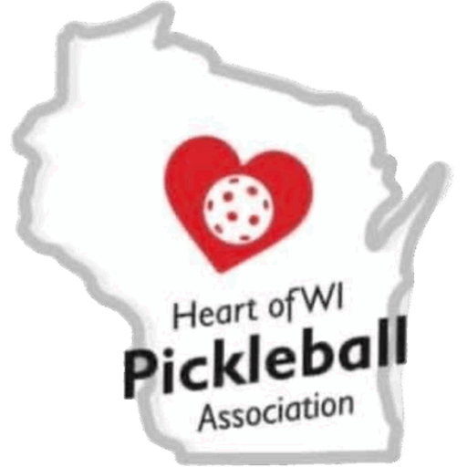

Pickleball Pools
A guide for tournament directors and court captains of the Heart of Wisconsin Pickleball Association

| Kind | Phone app for round-robin doubles and singles tournaments |
|---|---|
| Made for | Heart of Wisconsin Pickleball Association (HOWPA), Plover, Wisconsin |
| Used by | Tournament directors and court captains |
| Players | Need nothing. They get emails and a web link |
| Phones | Android only (not iPhone) |
| Rules | USA Pickleball Official Rulebook, 2026 |
| Works with | Zeffy, DUPR, Google, email, Excel |
| Cost | Free |
Pickleball Pools is a free phone app that runs round-robin pickleball tournaments, doubles or singles. It sorts teams into fair pools by their DUPR ratings, keeps every score, works out the standings and tiebreakers by the USA Pickleball rulebook, and moves the top teams on to Round 2 and the Finals.
On tournament day, each court captain enters scores on their own phone, and the scores reach the tournament director's phone by themselves. Players and their families follow the scores on a web page, with nothing to install. After each match, both teams get an email with the score and a photo of the paper score sheet.
Getting the app top
The app is not in the Google Play store. It arrives as a file, by email or text message, with a name like PickleballPools-1.22.0.apk.
- Tap the file.
- Android asks whether to allow installing from that app (Gmail, Messages or Drive). Choose Allow. This is expected and only happens the first time.
- Tap Install, then Open.
New versions arrive the same way. Installing a new version over the old one keeps every tournament and score.
The app works on Android phones only. Someone with an iPhone can still follow the live scores page, and a director can enter scores for a captain who has an iPhone.
Who does what top
Each person has a role, given by their email address. A person must sign in with that same address for the role to work.
| Role | What they can do |
|---|---|
| Admin | Everything. Gives roles to others, keeps the club settings and the list of venues. |
| Tournament director | Runs tournaments: teams, pools, printing, starting, scores. Adds court captains, sees the history of every change, emails players. |
| Court captain | Enters scores and photographs score sheets for their own courts, in one tournament. |
| Treasurer | Can see every tournament. |
| Player | No account and no app. Players get emails and the live scores link. |
Setting up (once) top
An admin does this once. Afterwards every new tournament starts with the club's settings already filled in.
Signing in
On the home screen, tap Account (sign in, roles). There are two ways in:
- Continue with Google, for a Gmail address. A Google page opens; choose the account, and the app comes back signed in. If the phone asks which app to open, choose Pickleball Pools.
- Email me a sign-in code, for any email address. A 6-digit code arrives from no-reply@tbor.ing. Type it into the app within 10 minutes.
The phone stays signed in for 90 days. To remove your account for good, use Account → Delete my account, or the account deletion page. See also the privacy policy.
Giving someone a role
Account → People and roles → + Give someone a role. Type their email address and choose the role. Court captains are added for each tournament instead; see Court captains.
Venues and courts
A venue is a place the club plays, with its list of courts. Account → Venues and courts → + Add a venue. Type the name, the address if wanted, and the courts, such as 1-8 or 1-6, 9, 10. Tap a venue to change it; press and hold to remove it.
Club settings
Account → Club settings holds the starting values for every new tournament: club name, contact email, payment link, number of pools, teams that move on, points per game and win-by. A single tournament can still be changed in its own Settings before it starts.
Light or dark screen
Under More on the home screen, Appearance chooses a light screen, a dark screen, or whatever the phone itself is set to.
How a tournament runs top
Every tournament goes through the same steps. The home screen shows which step it is on, such as Adding teams or Round 1 in progress.
- Open registration in Zeffy. Players pay and give their own DUPR ID and their partner's.
- Create the tournament in the app from that Zeffy event.
- Pick the venue. This decides the court numbers.
- Load the teams. Partners are matched by DUPR ID, and the director checks each rating.
- Make Round 1 pools. The app spreads the teams so every pool is fair.
- Print the sheets the night before.
- Start the tournament on the day. Pools and venue are locked, and every player is emailed the live scores link.
- Captains enter scores after each match and photograph the paper score sheet.
- Make Round 2 pools when Round 1 is finished.
- Play the Finals and email the results to every player.
Each step in detail top
1. Creating a tournament
On the home screen, under More, tap All tournaments (new, switch). This lists every tournament on the phone; the one now open is marked. Under New tournament:
- From a Zeffy registration shows the club's Zeffy events. Choosing one makes a tournament with its name and date. Choosing the same event again opens the tournament already made.
- Empty starts a blank tournament.
- Practice (made-up teams) fills in pretend teams, for trying everything out before a real event.
Tap any tournament in the list to switch to it. Press and hold an old one to delete it.
2. Picking the venue
Below the tournament name, the home screen shows where it is played, for example Plover Courts · courts 1-8 (change). Tap it and choose a venue. Somewhere else lets you type a one-time name and courts. Pools take courts in order: with courts 1 to 8 and four pools, Pool A plays on courts 1 and 2, Pool B on 3 and 4, and so on.
3. Registrations and teams
Tap Registrations. Each paid player appears once. Two players become a team when each one named the other's DUPR ID.
- Load a payment file (CSV) reads the list of payments downloaded from Zeffy or another payment site. The app guesses which column is which and remembers it next time.
- + Add a player by hand is for cash or check payments.
- Tap a player to enter their DUPR rating. The app records the date it was checked.
- When pairs are complete and rated, tap Add ready teams to the tournament.
Teams can also be typed in directly under Teams → + Add a team, with both players' names, ratings, DUPR IDs and email addresses.
Singles tournaments
A tournament is either doubles or singles. For singles, build the Zeffy form without a "Partner DUPR ID" question. When the payments are loaded, the app sees there is no partner column and makes the tournament singles by itself: each player is their own entry, placed in pools by their own DUPR rating. Everything else works the same. Screens say Players instead of Teams.
To choose by hand, use the Singles box in Settings. It can only be changed before any players or teams are added.
4. Round 1 pools
Tap Make Round 1 pools. Teams are ranked by combined DUPR rating and dealt into the pools in a back-and-forth order (1, 2, 3, 4, then 4, 3, 2, 1), so every pool has a fair mix. Check the pools before starting. If something is wrong, Redo Round 1 pools builds them again.
Team numbers and order of play
Within each pool, teams are numbered by seed: team 1 has the highest combined DUPR rating. The schedule, the captain sheets, the captains' phones and the live page all use these numbers, so a captain can call out "team 1 plays team 4 on court 7". Round 2 pools are numbered again the same way.
The order of play follows the seeding, as in seeded volleyball pools: the top seed plays the lowest seed first, and the two top seeds meet in the last round. Each round the matches move one court over, so no team spends the whole day on the same court.
5. Printing the sheets
Under More, tap Print sheets (Excel) and choose the round. The app makes three Excel files, laid out like HOWPA's own hand-made sheets:
| Sheet | What it shows | Used for |
|---|---|---|
| Schedule | Every pool's teams, and which match is on which court each round | Posting on the wall |
| Court captain sheets | One page per pool, with spaces for game scores and initials | The captains' clipboards |
| Results grid | Every team against every other, with record, points and place | Posting results |
The phone offers to send the files by email or save them to Google Drive. Print them from a computer. Printed again later, they include the scores entered so far.
6. Starting the tournament
When the pools are right, tap Start the tournament. Starting:
- locks the teams, the pools, the venue and the game settings;
- opens score entry for the director and the court captains;
- emails every player the live scores link, if the tournament is online.
Unlock the pools is there for real mistakes. Scores already entered are kept, but redoing a round's pools erases that round's scores.
7. Scores
Captains enter scores on their phones; see Court captains. The director can also enter or correct any score: tap the pool, then the match. Each game is checked against the rules (to 11, win by 2, unless the settings say otherwise). The standings and tiebreakers update at once.
Ties are broken in the rulebook's order: wins, then head-to-head, then point difference, and so on. A tie that nothing breaks is marked director decides, with the teams listed by DUPR rating.
8. Round 2 and the Finals
When every Round 1 match has a score, tap Make Round 2 pools. The top teams of each pool go to the Championship pools; the other teams play in the Consolation pools. The winners of the Championship pools are shown under Qualified for the Finals.
9. Results
- Email the results to all players sends the standings, the Finals qualifiers and the live scores link to every player, one email each.
- Share results sends the standings as plain text, for a club email or Facebook post.
- History (who changed what) lists every score entered or changed, by whom and when.
Court captains top
Each court has a captain who installs the app and enters the scores for the matches on their courts.
For the director: adding captains
- Sign in, then Account → Put this tournament online. This only needs doing once per tournament.
- Court captains for (the tournament) → + Add a court captain. Type the captain's email address and their courts, such as 7, 8.
For the captain: entering scores
- Install the app and sign in with the email address the director used.
- On the home screen, tap Score my courts. Only the matches on your courts are shown, round by round.
- After a match, tap it and enter each game's score. Tap Save.
- The app offers to take a photo of the paper score sheet. Write your initials on the sheet first. The photo is the receipt for that match.
Scores and photos entered without signal are kept on the phone and sent by themselves when the signal returns. A red line says how many are still waiting. All live scores opens the full scoreboard.
Players and families top
Players do not install anything or make an account. They receive:
- an email at the start with the live scores link;
- an email after each of their matches, with the score and a link to the photo of the score sheet;
- an email at the end with the results.
The live scores page works on any phone or computer and updates by itself every 20 seconds. Anyone with the link can watch it. The director can send the link to families with Share the live scores link.
In public, players are shown by first name and last initial, such as Pat L. If two players share the same name, each gets a number, such as Pat L. (2), and their emails tell them which number is theirs. Full names, email addresses and DUPR IDs appear only on the director's screens.
Backups and past tournaments top
These are two different things. A backup is a private file for directors. Published results are a public web page for everyone.
| Backup file | Published results | |
|---|---|---|
| What it holds | Everything: names, emails, DUPR IDs, ratings, pools, scores | First names and last initials, pools, scores, standings, Finals. No emails or DUPR IDs |
| Who sees it | Only whoever you send it to. Keep it private | Anyone with the link |
| Used for | Safekeeping, a new phone, or another director taking over | The club's Past tournaments page, website and Facebook |
Backing up a tournament
Under More, tap Back up this tournament (file), then choose Gmail (send it to yourself) or Drive. In All tournaments, pressing and holding any tournament also offers Back up to a file. A good habit: back up the night before, and again after the Finals.
Opening a backup on another phone
Install the app, then All tournaments → Import a backup file, and choose the file from Gmail's attachments or Drive. If that tournament is already on the phone, the app asks whether to Replace it or Keep both. A kept copy is marked "(copy)" and stays offline, so it never mixes with the live scores.
Publishing results
When the tournament is over, a director taps Publish results (Past tournaments page) under More, and can share the link it shows. To fix a score later, correct it and tap Update the published results. Remove the published results takes it off the page.
The Past tournaments page lists every published tournament, newest first. Open it from All tournaments → Past tournaments (web page). Each tournament's page also offers its results as a download, for the club website.
Deleting a tournament
In All tournaments, press and hold it, then choose Delete from this phone. Back it up first if it may be needed. Published results and scores already on the club server are not deleted.
Problems and what to do top
Signing in
The sign-in code never arrived.
Check the junk or spam folder. Codes last 10 minutes, and up to 5 can be sent in an hour. Or use Continue with Google.
Google says the app is blocked, or "access denied".
While the app is in testing, Google only lets in accounts on its list of testers. Ask the admin to add that Gmail address, or sign in with an emailed code instead.
I signed in, but the director buttons are missing.
The role was given to a different email address than the one used to sign in. Ask the admin to check People and roles, then sign out and in again.
After choosing Google, the phone asks which app to open.
Choose Pickleball Pools, and tap Always if offered.
Registration and teams
A singles event came in as doubles (or the other way round).
The Zeffy form decides it: a "Partner DUPR ID" question means doubles. If no teams are added yet, change the Singles box in Settings. If some are, delete them under Teams first.
A player paid, but has no partner yet.
They wait in the Registrations list until their partner pays. Each partner must name the other's DUPR ID.
Two partners will not pair up.
One of them probably mistyped a DUPR ID. Tap the player, correct the ID, and the pair joins.
A player has no DUPR ID or rating.
Add the team by hand under Teams and type an estimated rating. The team is marked as missing a DUPR ID.
Someone paid in cash or by check.
Registrations → + Add a player by hand.
Before the start
A team drops out after the pools are made.
Tap the team and choose Withdraw. A banner says the pools are out of date; tap Redo Round 1 pools. Bring back undoes a withdrawal.
The venue does not have enough courts.
A red warning says how many courts the round needs. Some pools then share courts, and those matches wait for a free court. Making fewer pools in Settings also needs fewer courts.
The wrong tournament is open.
All tournaments, then tap the right one.
During play
A team leaves partway through.
Tap the team and choose Withdraw. As the rulebook says, its results in that pool no longer count, and the standings are worked out again.
The pools must change after starting.
Tap Unlock the pools, fix them, and start again. Redoing a round's pools erases that round's scores.
A wrong score was entered.
Tap the match again and correct it. The history keeps both the old and new score.
A captain sees "the director hasn't put the pools online yet".
The director's phone has not sent the pools. It needs signal, the tournament must be online, and it must be started. The captain's screen checks again every 20 seconds.
A captain sees no matches, or the wrong ones.
The director typed a different email address or the wrong courts. Fix it under Court captains.
No signal at the courts.
Keep entering scores and taking photos. They are kept on the phone and sent by themselves when signal returns.
A captain's phone dies, or the captain has an iPhone.
The director enters that court's scores on their own phone. Another captain can also be given those courts.
A court can't be used.
The app cannot move a single match to another court yet. Play it on any free court, and have the director enter the score.
The standings show "director decides".
Every rulebook tiebreaker has been tried and the teams are still level. The director decides, for example by a playoff game, and the teams are listed by DUPR rating in the meantime.
Emails and the live page
A player did not get an email.
Check that the player's email is on their team or registration, and ask them to look in their junk folder. Emails come from no-reply@tbor.ing. The director can always send the link with Share the live scores link.
The live scores page is not changing.
It updates every 20 seconds, once the director's phone has signal. Scores still on a captain's phone without signal appear when they are sent.
The phone
The screen is too dark, or too bright.
More → Appearance.
The director's phone is lost or broken.
Open the latest backup on another phone: All tournaments → Import a backup file. Sign in, and live scoring carries on from there; scores sent by captains are kept on the club's server. Without a backup, the live scores page still shows everything the captains entered.
Another director needs to take over.
Send them a backup file. They import it and sign in with a director role.
An old tournament should be on the club website.
Open it, tap Publish results, and share the link.
Services the app works with top
| Service | What it is | How the app uses it |
|---|---|---|
| Zeffy | Free payment and ticketing site for non-profits | Players register and pay there. The app lists the club's Zeffy events to create tournaments. Reading the players directly from Zeffy is being added. |
| DUPR | Dynamic Universal Pickleball Rating, the rating most players have | Each player's DUPR ID links partners together, and ratings set the pools. Ratings are looked up by hand today. Sending results to DUPR is planned; the club has asked DUPR for access. |
| Gmail accounts | Sign-in with Continue with Google. The app only learns the email address and name. | |
| Sent through Resend from no-reply@tbor.ing | Sign-in codes and players' emails: start, each match, and results. | |
| Cloudflare | Internet company that hosts the club's small server for free | Holds accounts, live scores, score sheet photos, venues and club settings, and serves the live scores page. |
| Excel | Spreadsheet files | The printed sheets. They also open in Google Sheets. |
| USA Pickleball | The sport's rule-making body | Tiebreakers, withdrawals and scoring follow its Official Rulebook (2026). |
A mailing list through Mailchimp, for club news and results, is planned.
What is kept, and where top
- On the director's phone: teams, names, emails, DUPR IDs and ratings, pools and scores.
- On the club's server: staff accounts and roles, tournament pools and scores, score sheet photos, and the history of changes.
- From DUPR: only each player's DUPR ID and current rating, for seeding.
- In public: the live scores page and published results show first names, last initials and scores. No emails or DUPR IDs.
- In backup files: everything on the director's phone. Send them only to yourself or another director.
Words used in the app top
| Word | Meaning |
|---|---|
| Pool | A group of teams that each play every other team once |
| Round 1, Round 2 | The first set of pools, then the pools for the top teams and the rest |
| Championship bracket | The Round 2 pools for the teams that did best in Round 1 |
| Finals | The last matches, between the Championship pool winners |
| Seeding | Ranking teams by combined DUPR rating to make fair pools |
| Start | The moment the pools are locked and scoring opens |
| Online | The tournament is on the club's server, so captains and the live page can see it |
| Receipt | The captain's photo of the paper score sheet, with initials |
| Withdraw | Take a team out of the tournament; its results stop counting |